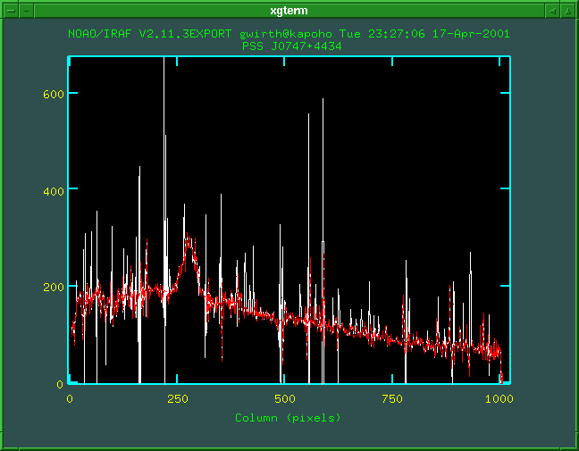

Name
skyinterp -- interpolate over regions where background is strong
Usage
skyinterp inimage outimage skyimage
Parameters
- inimage
- Names of existing images to be cleaned
- outimage
- Names of cleaned images to produce
- skyimage
- Name of reference sky spectrum
- thresh
- Threshold sky value. Pixels in the input images which
correspond to pixels in the skyimage having sky values above
the threshold value will be interpolated over.
Description
This task can be used to effectively clean extracted spectra of
regions which are degraded to to imperfect background subtraction
in the vicinity of strong emission features. Such regions
commonly occur when spectra of faint objects are reduced.
First, inspect a plot of the reference sky spectrum. Determine
the flux level which defines, in your judgement, a "strong"
emission line which is likely to cause trouble in subtraction.
Set the thresh parameter for this task to that value.
For each input image, this task will perform the following
operations:
- Create a temporary image by passing a 29-point median
filter across the image to smooth on long scales.
- Create a temporary image whose pixels consist of data from
the science image (for regions of low sky background), or data
from the median-smoothed image (for regions where the sky flux
in the reference image exceeds the threshold).
- Pass a 9-point median filter over this image to generate an
image smoothed on smaller scales.
- Create the output image, consisting of pixels from the
input image in areas of low sky background (sky value <
threshold) and pixels from the smoothed image created in the
previous step in those regions where the sky exceeds the
threshold.
Examples
- Replace sky-dominated pixels in the image
foo.fits based on sky values from the file
sky.fits, creating the output image clean.fits:
donspec foo.fits clean.fits sky.fits thresh=15000
The plot below shows NIRSPEC data before (white) and after
(red) cleaning via this task.

See Also
imexpr
The cl script skyinterp.cl
The package nirspec
Gregory D. Wirth <wirth@keck.hawaii.edu>
Last modified: Tue Aug 6 17:08:14 HST 2002